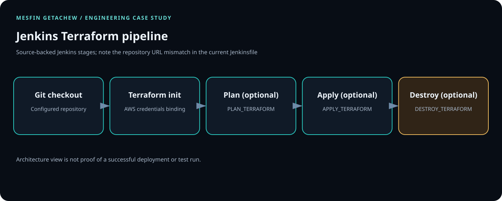

Controlled access
Apply least privilege, protect credentials, scan artifacts and require appropriate review gates.
Jenkins · Terraform · AWS
A parameterized Jenkins pipeline for the Terraform lifecycle on AWS.

01 / PROBLEM
A standard delivery path reduces avoidable variation between infrastructure changes. A production implementation should also account for credentials, approval gates, state protection and rollback.
02 / SYSTEM FLOW
Git push → Terraform init/plan → optional apply or destroy → AWS infrastructure
03 / PRODUCTION CONSIDERATIONS
Apply least privilege, protect credentials, scan artifacts and require appropriate review gates.
Plan for failure, observable runtime behavior, rollback or recovery and tested runbooks.
Keep configuration versioned, modular and documented.
ARCHITECTURE / TERRAFORM PIPELINE
The source Jenkinsfile defines optional Terraform plan, apply and destroy stages around AWS credentials. The diagram reflects those stages, including destructive operations, rather than implying a container image flow that is not shown in that Jenkinsfile.

DataOpsInnovator/devops-project.git, which differs from the current repository URL; reconcile this before running the job.Plan, apply and destroy are separately parameterized, but parameters alone are not an authorization boundary.
The Jenkinsfile invokes terraform apply -auto-approve and terraform destroy -auto-approve. Do not run this against a production account as-is.
Separate plan and apply permissions, require protected approvals, use short-lived credentials, and enforce workspace/environment allowlists.
git clone https://github.com/DataOpsInnovator/devops-ci-cd-pipline-project.git cd devops-ci-cd-pipline-project git ls-files git show HEAD:Jenkinsfile terraform -chdir=infra fmt -check -recursive terraform -chdir=infra init -backend=false terraform -chdir=infra validate
Terraform commands assume the repository's Terraform root is infra/, as described in its README. Confirm the path exists before running. Do not execute apply/destroy for verification; capture the Jenkins build URL, test results, redacted plan and tool versions instead.
04 / ENGINEERING VALUE
Add measurable outcomes only when substantiated. No cost or performance figures have been invented for this case study.